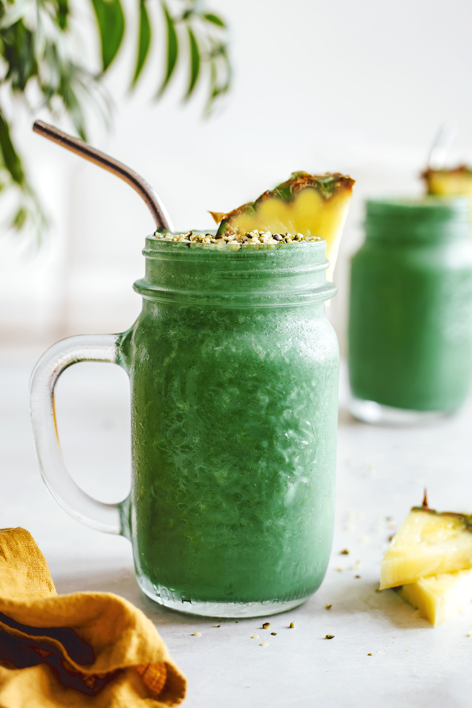
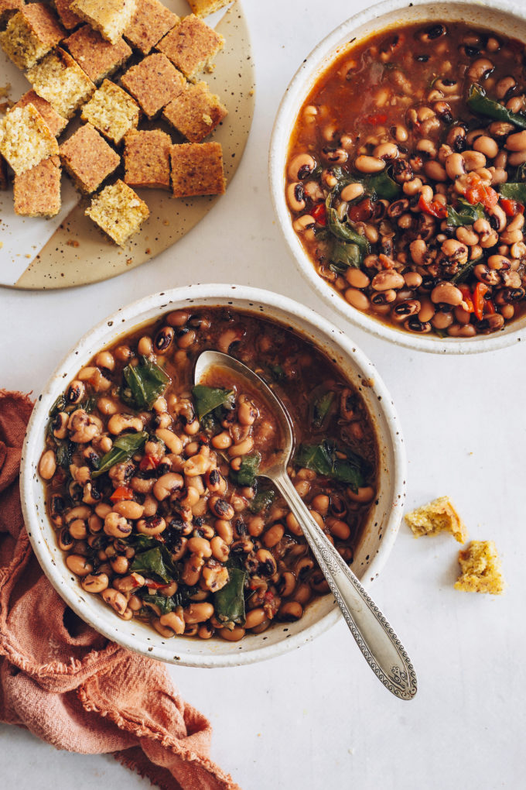
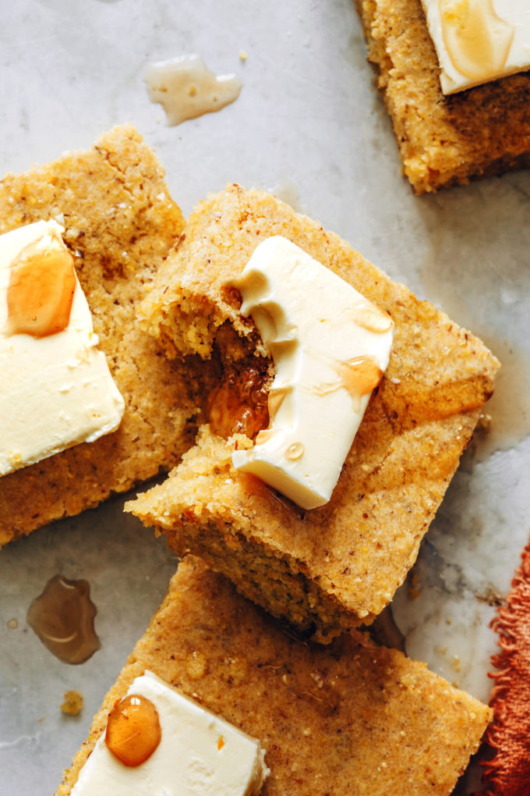

MINIMALIST BAKER
All Recipes
Vegan
Gluten-Free
About
Shop
Cookbook
Blogger Resourcess
Simple recipes that
make you feel good
NEW RECIPES
SHOW ME EVERYTHING
  
Superfoods Green Lemonade Smoothie
Smoky Instant Pot Black Eyed Peas & Greens (Vegan)
Perfect Vegan Cornbread